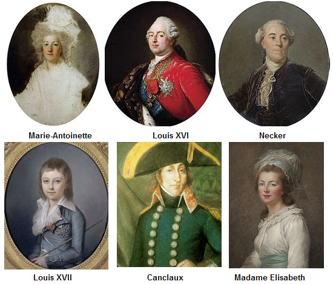

Loeiz C'hwezek
Louis XVI
Chant collecté par Théodore Hersart de La Villemarqué
dans le 2ème Carnet de Keransquer (p. 19 - 20).

Mélodie
Arrangement Christian Souchon (c) 2019
|
A propos de la mélodie Inconnue, remplacée par "René Le Guennec", tiré de la revue "La Paroisse Bretonne de Paris", de l'abbé François Cadic, numéro de mars 1922. Cette mélodie est donnée à titre d'illustration. A propos du texte Cependant, la page 19 /10 commence par une phrase interprêtée par le publicateur du carnet 2 comme étant "Le mari de Skaër à ... Loiz Jourdren deus Koré - Keré 64". Cela rappelle l'indication fournie par La Villemarqué à la Société archéologique du Finistère, selon laquelle il avait recueilli, à Corray des informations sur le chouan Bonaventure Carré, auprès d'un ancien tambour des armées de la République, nommé Jourdan. C'est sous la dictée de ce même Jourdren, que sont prises les notes sur la Chouannerie qui occupent les pages 28 à 31 du carnet. On doit sans doute comprendre que ce Louis Jordren de Coray, agé de 64 ans, avait chanté ce morceau à La Villemarqué, et que malgré ses convictions chouannes il avait servi dans l'armée de Canclaux. Par ailleurs, on remarque que 12 doubles-vers du présent poème se retrouvent à peine modifiés dans les strophes 19 à 26 du chant du Barzhaz Les Bleus. Il en est de même pour L'hymne des Chouans du Carnet N°2 dont 14 doubles-vers sont reproduits, avec les adaptations nécessaires aux strophes 33 à 44 du même morceau. Est-ce à dire que seules les 30 strophes restantes des" Bleus" sont de Guillaume Le Gwern, comme l'indique La Villemarqué? Ou que le présent "Louis XVI" et l'"Hymne des Chouans" seraient considérés par lui comme étant du même auteur, malgré la remarque de la stophe 20 ("Sans-Souci" avait été "kloarek", mais n'avait pas été ordonné)? En revanche, le Carnet de Keransquer N°2 contient une autre Mort de Louis XVI dont la facture rudimentaire indique une origine plus populaire. |
About the tune Unknown, replaced, to illustrate the text, by "René Le Guennec", from the review "La Paroisse Bretonne de Paris", edited by Abbé François Cadic, March 1922 issue... About the lyrics: However, page 19/10 begins with a sentence which the publisher of notebook 2 reads as "Scaër's husband at ... Loiz Jordren deus /of Koré - Keré 64". This is reminiscent of the information provided by La Villemarqué to the Archaeological Society of Finistere, according to which he had collected, in Corray, information on the Chouan fighter Bonnaventure Carré, from an old Republican army drummer, named Jourdan. It is under the dictation of this same Jourdren, that he recorded notes on the Chouannerie which occupy pages 28 to 31 of the notebook. It must be understood that this 64-year-old Louis Jordren of Coray sang at La Villemarqué a song he had learnt from a soldier who had served under Canclaux. Moreover, we note that 12 double-verses of this poem appear, more or less modified, in stanzas 19 to 26 in the Barzhaz song The Blue Ones . It is the same for The hymn of the Chouans in Collecting Book N ° 2 of which 14 double-verses are reproduced, with the necessary changes in stanzas 33 to 44 of the same piece . Does this mean that only the remaining 30 stanzas of the "Blue Ones" are by Guillaume Le Gwern, as La Villemarqué indicates? Or that the present "Louis XVI" and the "Hymn of the Chouans" were considered by him as works by the same author, despite the remark inserted into stanza 20 (Le Guern aka "Sans-Souci" had been "kloarek", but had not been ordered)? On the other hand, Keransquer copybook N°2 harbours another Death of Louis XVI whose uncouth character hints at a less educated composer. |
|
BREZHONEK Page 19/10 1. Troit va Doue va daoulagad en div vammenn a zaeloù ! Vit ma hallin ouelañ bemdez ar walleurioù deus ma bro. 2.Ur galon glac'haret mantret, En-deus gomfort o ouelañ. Deus ma foan n' c'houlan ket remed, keit a ma vin er bed-man. (div wech) [Un crochet réunit les 2 vers suivants] 3. N’eo ket tad, tadoù ha mammoù, [1] ma na oufec'h gwel ar re C'hwi welo ho pugaligoù En eur, da goll oc’h ené. 4. Loeïz ar C’hwezek, vel ma weler, roe e vec'h hag e varazm D'un heritik añvet Neker [2] evit gouarn en e blas; (div wech) 5. Hag asant, en e Rouanez n'en-deuz bet biskoazh fïziet, Lakaat tud deus ar feiz nevez da c'houarn e gabinet. [3] 6. Na lakaat gant Katoliked, Heritiked ordren zo - Me gav din- ar voien asuret, d'ober gwalleur hor vro. (div wech) 7. N‘eo ket re ‘ vag en o c’halon Torfejoù, ar re vrassañ D'an Tron ha d'ar Relijion, ar re hen attak kentañ .. 8. P’en-deus anzavet bep tra holl, ha savet ar gwalleürioù En-deuz prest kerzhet en e rout da gommandiñ en e vro. (div wech) [crochet] 9. Breman hallez, boued an ifern, reiñ da galon d'ar joaiiusted P‘az-teus enaouet an tan-gwall D‘ur vro eus ar gaerrañ. Page 20 10. Ar ministred deus da rejañs deus gwriziennet 'n hon touez, [4] Hag a ra gouzañv peb tra E bro e bep sort fallagriezh, (div wech) 11. Pellet o-deus ar veleien ha distrujet an iliz. Ar Roue a zo kouezhet e benn war 'r chevalet e Paris. 12. Penn ar Rouanez prest goude zo kouezhet ivez d'an douar Memez devezh a zo bet kouet penn Elisabeth, e c'hoar. (div wech) [5] [crochet] 13. Loeïz Seitek hag eñ bugel [6] o-deus detinet er prison Hag o-deus lakaet da vervel dre an nerzh deus ar boeson... [crochet] 14. Deut d'en-em guzh, heol benniget O wel’t ar sort torfejoù, Ne dleont bezañ komitet Nemet gant drouk sperejoù! (div wech) [crochet] 15. Kenavo Kleier benniget . N'ho c'hlevfen mui o gervel. Kenavo kleier benniget Da vont d’an of‘renn santel! 16. Kenavo, Foñs badiziant, E-lec'h emaon bet nerzhet, Evit difenn lezenn Doue Bewech ha ma vije red! (div wech) 17. - Keno, bremañ, Foñs badiziant, ha c'hwi kovesionoù, [7] Ennoc'h e oant en ur momant, Gwalc’het toud hor pec'hejoù! 18. Evit gouzañviñ ar marv Evel bep a zakramant Ra brezel d'ar pec'hejoù… (div wech) [crochet] 19. Kenavo Kador 'r wirionez [8] E pelec'h em-eus klevet, E renker kasaat an drouk, Ha karout ar mat bepred. Traoù silvidik-braz d'hon ene A ra brezel d'ar pec'hed! (div wech) 20. Kenavo Kleier benniget, [9] a gane war hor pennoù (gant ur belek yaouank) N‘ho klevan mui ac‘hanomp gervel, d'ar zulioù ha d'ar goelioù! [crochet] 21. Kenavo Beleien santel a zo skejet deuz a vro Plijet gant madelezh Doue, ho gwelimp o tonet endro, [10] Ha Doue a vezo meulet gant kement kristen a vo! (div wech) KLT gant Christian Souchon |
TRADUCTION FRANCAISE Page 19/10 1. Transforme, O mon Dieu, mes deux yeux en deux sources de larmes ! Pour mieux, mon pays malheureux, Pleurer ton sort infâme ! 2. Un cœur meurtri par le chagrin Les larmes le secondent. Et d’autre remède il n’est point A ma peine en ce monde. (bis) 3. Est-il un seul père [1], O parents, Epargné par ce drame ? Vous craignez de voir vos enfants, Un jour perdre leur âme. 4. Louis XVI requit, on le sait Pour sortir du marasme, L'hérétique nommé Necker [2] Qui régnait à sa place ; (bis) 5. Consentant, il ne fit jamais A la Reine confiance De mettre un chrétien réformé A gouverner la France.[3] 6. Or mélanger des héréti- -ques et des catholiques Est le plus sûr moyen de rui- -ner la chose publique. (bis) 7. Méditer un méfait en son Cœur, c’est mal, doit-on dire, Mais s’en prendre à la religion, Au trône, c’est bien pire. 8. Une fois qu’il eut reconnu Les malheurs qu’il soulève, Necker reprit le chemin de Son canton de Genève. (bis) 9. Vas donc livrer, diable maudit, Ton cœur à la jouissance Toi qui livras à l’incendie Le beau pays de France. page 20 10. Les ministres que tu nommas Chez nous ont pris racine. [4] L’abomination qu’on y voit Ils en sont l’origine, (bis) 11. Ils persécutent la vraie foi Et l’Eglise est en ruines. Ils ont décapité le roi Avec leur guillotine. 12. La tête de la reine juste Après tombait à terre, La sœur du roi, Elisabeth, Est morte la dernière. (bis) [5] 13. Louis XVII n’était qu’un enfant, [6] En prison, c’est sa place. Mais on lui fait boire un poison Et bientôt il trépasse. 14. Soleil béni, vas te cacher, Pour ne point voir ces crimes Qui ne peuvent être le fait Que de forces malignes. (bis) 15. Je n’entendrai plus votre appel, Adieu cloches bénies ! La sainte messe pouvait-elle Avoir voix plus jolie ? 16. Adieu, vous les fonts baptismaux, Ce foyer d’énergie Pour défendre la loi de Dieu. J’y consacrais ma vie. (bis) 17. Vous les fonts baptismaux, adieu ! Confessionnaux de même, [7] D’où nous ressortions lavés de Nos péchés et nos peines. 18. Pour que je supporte la mort, Sacrements de naguère Lesquels faisaient hier encor A nos péchés la guerre… (bis) 19. Adieu, chaire de vérité [9] Où j’appris la sagesse, La haine du mal, du péché, L’amour du bien, sans cesse. Pour notre âme, si salutaires, Ils faisaient au péché la guerre. (bis) 20. Adieu, adieu, cloches bénies Qui chantiez sur nos têtes (dit par un jeune prêtre) Muette est votre mélodie Des dimanches et fêtes . 21. Vous qu’on a chassés de ces lieux Bien loin, adieu, chers prêtres ! Qu’il nous soit accordé par Dieu De vous voir reparaître [10] Un jour et Dieu sera loué Dans toute la chrétienté ! (bis) Traduction: Christian Souchon |
ENGLISH TRANSLATION Page 19/10 1. O my Lord, turn, these eyes of mine Into two well-springs of sour tears! My hapless land, I will repine On you and these cruel years. 2. To a heart that's bereaved by grief Of any joy in life, But for tears, there is no relief Or easement from our sad plight. (twice) 3. Who's better aware than their sire [1] Of the risks that children run: He is afraid lest in hell's fire Their souls some day should burn. 4. Louis the Sixteenth, as we all know By events overwhelmed On heretic Necker bestowed [2] The ruling of his realm. (twice) 5. He did not trust his queen's advice, He deemed inadequate, And let those of the Reformed faith Govern the cabinet.[3] 6. Along with Catholics to leave Heretics to give order, Is, I daresay, the surest way To bring about disorder. . (twice) 7. If you hatch mischief in your heart You are bad, but it must be said That setting Faith and Throne apart Will still much more grief spread. 8. When he had confessed everything And caused so much misery, He quickly decided to leave And rule in his own country. (twice) 9. Now you may well, creature of hell, Devote your heart to pleasures, After you lit a fire that did Consume our dearest treasures. Page 20/11 10. As your astute ministry's fruit Your folks are still a nuisance [4] - Your bad offshoot with us took root - By their tricks and their malice. (twice). 11. Sent to exile the good priests while Were demolished the churches. And the King's head fell, O what dread! On the scaffold in Paris. 12. And the Queen's head soon afterwards To the ground also rolled The same day fell the head of El- izabeth, the King's sister. (twice) [5]. 13. Louis the Seventeenth, but a child [6] They have kept in a prison And they killed him after a while By giving him some poison. 14. The bright sun has blushed at the view Of so much malevolence Whose perpetration tints the dew: In red on the vales of France. (twice) 15. Farewell, farewell, ye blessed bells! You'll never again call us, Farewell, ye blessed bells, farewell On Sundays to go to Mass! 16. And farewell, too, baptismal font Where I've got the right spirit, The law of our God to defend, To devote my life to it. (twice) 17. Holy baptismal font, farewell! Confessional, farewell, too, [7] From which we emerged cleansed of all Sin, were pardoned anew! 18. To prepare us for death as does Each of the sacraments, They help'd us in our war on sin, Our safest battlement. (twice) 19. You, Holy Booth, the Chair of Truth, [8] Pulpit dispensing wisdom: Evildoing is a bad thing! Be righteous without ceasing! For our souls so salutary, Our help in our war on sin. (twice) 20. Farewell, farewell, ye blessed bells [9] That rang above our heads! (said by a young priest) Abolished is your melody On festivals and Sundays. 21. Farewell, holy priests who have been Expelled from this country! O may it please our God to ease Your pain and let you return! [10] He will be praised, a hymn be raised By the whole crowd of Christians! (twice) Translation: Christian Souchon |
NOTES:
|
[1] N'eo ket tad ...: "Il n'est de père qui ne craindrrait de voir ses enfants perdre leur âme". Comme l'ensemble du texte et la remarque insérée dans la strophe 20 l'indiquent, c'est un prêtre (réfractaire) qui parle. [2] Jacques Necker: (1732-1804) banquier genevois devenu directeur général du Trésor royal en 1776, puis des Finances, postes auxquels il modernise l'organisation économique du royaume en instaurant une certaine dose de dirigisme. Renvoyé en 1781, il est rappelé en août 1788, sous la pression de l'opinion publique et il covoque les les États généraux en obtenant le doublement du tiers état. Révoqué le 11 juillet 1789 il est rappelé aussitôt après la prise de la Bastille pour apaiser les révolutionnaires. Entré en conflit avec l'Assemblée nationale, il démissionne en septembre 1790 et retourne à Genève comme il est dit à la strophe 8. C'est le père de l'écrivain, Madame de Staël. [3] ARzazant (en) e rouanez,e-deus bet biskoazh fi[zi]et: cette phrase, en partie rayée n'est pas claire. La "reconstitution" et la traduction des strophes 5 et 6 sont uniquement des hypothèses. S'il est certain que l'auteur reproche à Louis XVI d'avoir remis le sort du pays entre les mains d'un "heretik" (un protestant), on ne saisit pas s'il lui impute ou non une confiance aveugle envers sa femme, ni si ce choix malheureux est la conséquence de cette excessive confiance. [4] Ar ministred deus da rejañs: L'héritage politique de Necker après son retour à Genève est abordé dans cette strophe qui fait de la révolution la fille du protestantisme. L'auteur semble confondre avec cette religion la philosophie des lumières. [5] Elisabeth née en 1764 et décapitée en 1794 était la soeur du roi Louis xvI à qui elle apporta un soutien indéfectible. Emprisonnée avec lui en 1792 et appelée à comparaître devant le Tribunal révolutionnaire sous la Terreur, elle fut condamnée à mort et exécutée. Son procès de canonisation est en cours. [6] Loeiz Seitek: Le second fils du couple royal, devenu dauphin en 1789 est reconnu comme titulaire de la couronne sous le nom de Louis XVII par les puissances coalisées et son oncle, le futur Louis XVIII, à la mort de son père en 1793. Il mourut deux ans plus tard sans avoir régné le 8 juin 1795, à la prison du Temple, atteint de tuberculose. Les conditions de sa captivité furent particulièrement atroces. [7] Kovesionoù: le confessional où est administré le sacrement de pénitence a fait l'objet d'un chant satirique Les dangers de la confession (en bas de page). [8] Kador ar Wirionez: Les chaires étaient considérées comme de dangereux instruments de propagande antirévolutionnaire et non des "Chaires de vérité", comme l'affirme l'expression bretonne. [9] Kleier: De nombreuses cloches furent fondues pour faire des canons comme le dit le chant de Piis, Couplet sur les cloches , composé à l'occasion de la motion de l'Assemblée nationale du 17 mai 1790, sur l'air du "O filii et filiae" (encart "Deux chants révolutionnaires"). [10] O tonet en-dro: le retour des prêtres réfractaires (à la constitution civile du clergé) ne put se faire qu'une fois la paix religieuse rétablie par Bonaparte, le 21 décembre 1801. (cf. Couplet pour les prêtres réfractaires qui donne le point de vue des Républicains sur cette épineuse question). | .
[1] N'eo ket tad ...: "There is no father who would not fear to see his children lose their souls". As hinted at by the whole text and the remark inserted in stanza 20, it is a (non-juror) priest who speaks. [2] Jacques Necker: (1732-1804) a Genevan banker who was appointed Director general of the Royal Treasury in 1776, then Minister of Finance, in which positions he modernized the economic organization of the kingdom by introducing a certain amount of dirigisme. After he was dismissed in 1781, he was recalled in August 1788, under the pressure of public opinion and he convoked the States-General, whereby the obtained the measure of "doubling of the Third" state. Revoked on July 11, 1789 he was recalled immediately after the taking of the Bastille to appease the revolutionaries. In conflict with the National Assembly, he resigned in September 1790 and returned to Geneva as stated in stanza 8. He was the father of the authoress Madame de Stael. [3] ARzazant (en) e rouanez,e-deus bet biskoazh fi[zi]et: This partly scored out sentence is far from clear. The "reconstruction" and the translation of stanzas 5 and 6 are only hypotheses. We understand without doubt that the author blames Louis XVI for having put the fate of the country in the hands of a "heretik" (a Protestant), but we not know clearly whether he ascribes to him or not a blind trust towards his queen, or if the unfortunate choice he made is, in his opinion, the consequence of this excessive confidence. [4] Ar ministred deus da rejañs: Necker's political legacy after his return to Geneva is addressed in this stanza, which claims that the French Revolution was a consequence of the ackowledgment of Protestantism. The author seems to equate this religion with the philosophy of enlightenment. [5] Madame Elisabeth, born in 1764 and beheaded in 1794, was the sister of King Louis XV to whom she gave unwavering support. Imprisoned with him in 1792 and called to appear before the Revolutionary Tribunal under the Terror, she was sentenced to death and executed. Her canonization process is underway. [6] Loeiz Seitek: The second son of the royal couple, who became Dolphin in 1789 was recognized as holder of the crown, under the name of Louis XVII, by the Coalition Powers and by his uncle, the future Louis XVIII, on the death of his father in 1793. He died two years later without having reigned on June 8, 1795, at the Temple prison, suffering from tuberculosis. The conditions of his captivity were atrocious. [7] Kovesionoù: The confessional where the sacrament of penance is administered was the subject of a satirical song The dangers of confession (at the bottom of the page). [8] Kador ar Wirionez: Preacher's pulpits were considered dangerous instruments of anti-revolutionary propaganda and not "Chairs of Truth", as the Breton expression literally dubs them. [9] Kleier: Many bells were melted to make guns as stated in a song by a named Piis, Couplet on the bells. It was composed to celebrate this decision of the National Assembly of May 17, 1790, on the air of "O filii et filiae" "(See the insert" Two revolutionary songs "). [10] O tonet en-dro: The return of non-juror priests (who refused to take an oath to the Civil Constitution of the Clergy) could not materialize until the religious peace was restored by Bonaparte, on December 21, 1801. (See Couplet on the non-juror priests expressing the point of view of the Republicans on this thorny issue). |

"Loeiz XVI" (Cadic)
Marv Loeiz XVI (C2 p.42)
"Les Chouans selon Villemarqué", un livre au format A4.  Cliquer sur le lien ou sur l'image ci-dessus |